Unity-Perception Synthetic Data-Features Overview
目录
Fundamentals
| Feature | Description |
|---|---|
| Perception Camera | Captures RGB images and ground truth from a Camera 从 Camera 捕获 RGB 图像和 ground truth |
| SOLO Schema | Schema for annotation, metric, and ground-truth data for the default SOLO endpoint SOLO 形式的 annotation, metric, ground-truth 数据 |
| Labeling | A component that marks a GameObject and its descendants with a set of labels 用一组标签标记 GameObject 及其子对象的组件 |
| Label Config | An asset that defines a taxonomy of labels for ground truth generation 定义用于生成 ground truth 的标签分类的 asset |
| Randomization | The Randomization tool set lets you integrate domain randomization principles into your simulation. 随机化 |
| FAQ | Frequently Asked Questions about common workflows and issues. 常见问题及解答 |
| Legacy Perception Schema | Schema for annotation, metric, and ground-truth data for the legacy Perception endpoint Legacy Perception 形式的 annotation, metric, ground-truth 数据 |
Labeling
| Feature | Description |
|---|---|
| Labeling | A component that marks a GameObject and its descendants with a set of labels 用一组标签标记 GameObject 及其子对象的组件 |
| Label Config | An asset that defines a taxonomy of labels for ground truth generation 定义用于生成 ground truth 的标签分类的 asset |
| Bounding Box 2D Labeler | Capture 2D bounding boxes for visible labeled objects. 捕获可见标记对象的 2D 边界框 |
| Hierarchical Bounding Boxes | How to combine bounding boxes of objects with parent-child hierarchical relationships during runtime. 如何在运行时将具有父子层次关系的对象的边界框组合在一起 |
| Bounding Box 3D Labeler | Capture 3D bounding boxes for visible labeled objects. 捕获可见标记对象的三维边界框 |
| Keypoint Labeler | Record the screen locations of specific points on labeled objects such as keypoints on humans. 记录标记对象上特定点的屏幕位置，例如人身上的关键点 |
| Metadata Labeler | Reporting object-level or environment-level metadata information during runtime. 在运行时报告对象级别或环境级别的元数据信息 |
Randomization
| Feature | Description |
|---|---|
| Randomization | The Randomization toolset lets you integrate domain randomization principles into your simulation. 随机化 |
| Scenarios | Scenarios control execution flow of your simulation – how many iterations to run the simulation, what randomizers to use, etc. 场景控制模拟的执行流程——运行模拟的迭代次数，使用什么随机化器等 |
| Randomizers | Randomizers encapsulate specific randomization activities to perform during the lifecycle of a randomized simulation. 随机化器封装了要在随机化模拟的生命周期中执行的特定随机化活动 |
| Randomizer Tags | RandomizerTags are the primary mechanism by which Randomizers query for a certain subset of GameObjects to randomize within a simulation. RandomizerTags 是随机化器查询游戏对象的某个子集以在模拟中随机化的主要机制 |
| Parameters | Parameters are classes that utilize Samplers to deterministically generate random typed values. Parameters 是利用 Samplers 确定地生成随即类型值的类 |
| Samplers | Samplers generate bounded random float values by sampling from probability distributions. Samplers 通过从概率分布中采样来生成有界随机浮点值 |
Data Generation
| Feature | Description |
|---|---|
| Perception Camera | Captures RGB images and ground truth from a Camera. 从 Camera 捕获 RGB 图像和 ground truth |
| Dataset Capture | Ensures sensors are triggered at proper rates and accepts data for the JSON dataset. 确保传感器以正确的速率触发，并接受 JSON 数据集的数据 |
| Output Endpoint | Currently supported output endpoints are: No Output, Perception endpoint, and Solo endpoint.当前支持的输出端点有： No Output、Perception 端点和 Solo 端点 |
| Metadata Labeler | Reporting object-level or environment-level metadata information during runtime. 在运行时报告对象级别或环境级别的元数据信息 |
资源
原文档：com.unity.perception/index.md at main · Unity-Technologies/com.unity.perception · GitHub
Randomization 工具集集成了合成数据集中随机化的功能：
- 提供了用于随机化的 Parameters
- 提供了从 Parameters 中挑选随机值的 Samplers
- 提供了协调完整随机化过程的 Scenarios
随机化的步骤：
- 创建 Scenario
- 定义 Randomizers 并将其添加到 Scenario 中
- 在 Randomizers 里设置好 Parameters 和 Samplers
- 生成用于 CV 的随机化训练数据
预先定义好的 Fixed Length Scenario 加载在场景的一个空对象中：
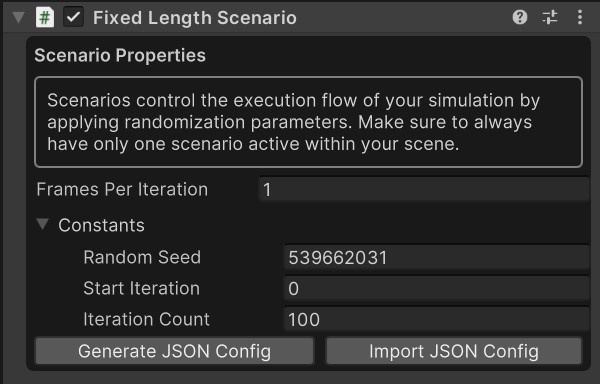
Scenarios 有三个任务：
- 控制模拟的执行流
- 组织 Randomizers 列表
- 定义可以从构建的 Unity 播放器外部配置的设置
默认情况下，Perception 包括一个现成的 Scenario，即 FixedLengthScenario 类。此场景针对固定数量的帧运行每次迭代，以创建指定大小的数据集。
Scenario Lifecycle Hooks
Scenarios 有许多在执行过程中调用的生命周期挂钩。下面是一张图表，显示了典型 scenario 运行的操作序列：

JSON Configuration
场景可以序列化为 JSON，在运行时进行修改和导入，以配置模拟行为，即使在构建了 Unity 播放器之后也是如此。默认情况下，可以使用场景检查器上的 Generate JSON Config 按钮序列化以下场景设置：
- Scenario 常量
- Randomizers 和 Parameters 上的字符串、数字和布尔字段
- Constant，Uniform，Normal 采样器的配置
以下是如何使用--Scenario-config-file 将场景 JSON 配置加载到 Windows Unity 播放器的示例：.\PerceptionTutorial.exe --scenario-config-file scenarioConfiguration.json
Implementing Custom Scenarios
对于场景应该针对任意数量的帧运行的用例，可能需要实现自定义场景。以下是用户可能想要覆盖以实现自定义场景迭代条件的两个最常见的场景属性：
- isScenarioReadyToStart - 定义确定场景何时可以开始迭代的条件
- isIterationComplete - 定义确定场景迭代结束的条件
- isScenarioComplete - 定义确定场景停止迭代的条件
Abstract Scenario Classes
在派生自定义场景时，根据您的需求，有两个抽象场景类可供选择。以下是这些选项的列表，以及何时可以为您的用例派生它们：
- Scenario\
- PerceptionScenario\
Scenario Constants
常量包括配置场景生命周期设置的属性，如起始迭代值或总迭代计数。通过派生自己的常量类，您可以添加自己的自定义场景设置来配置不同的场景属性。以下是FixedLengthScenario类中使用的 Constants 类的示例：
|
- 请确保在常量类上包含
[Serializable]特性。这将确保可以从 Unity inspector 正确配置常量。 - Scenario 类的
SerializeToJson()和DeserializeFromJson()方法可以重写以实现自定义序列化策略。
Randomizers 封装了在随机模拟执行期间要执行的特定随机化活动。例如，存在用于 spawning objects（生成对象）、repositioning（重新定位灯光）、varying the color of objects（更改对象颜色）等的 Randomizers。Randomizers 将 random parameters 公开到其 inspector interface，以进一步自定义这些变化。用户可以将一组 Randomizers 添加到 Scenario 中，以便定义模拟生命周期中要执行的随机化活动的有序列表。
要定义一个全新的 Randomizer，请派生 Randomizer 类并实现下面一节中列出的一个或多个方法，以便在模拟运行时随机化游戏对象。
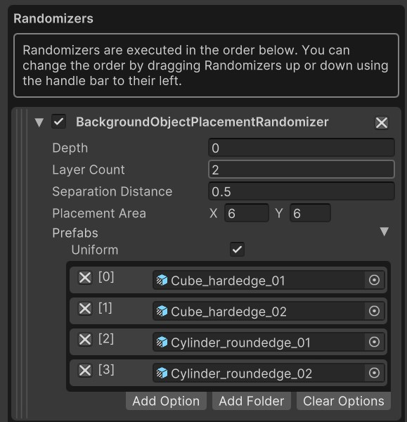
Randomizer Hooks
OnCreate()- called when the Randomizer is added or loaded to a Scenario 将 Randomizer 添加或加载到 Scenario 时调用OnIterationStart()- called at the start of a new Scenario Iteration 在 Scenario 迭代开始时调用OnIterationEnd()- called the after a Scenario Iteration has completed 在 Scenario 迭代完成后调用OnScenarioComplete()- called the after the entire Scenario has completed 在整个 Scenario 完成后调用OnStartRunning()- called on the first frame a Randomizer is enabled 在启动 Randomizer 的第一帧调用OnStopRunning()- called on the first frame a disabled Randomizer is updated 更新第一帧时，关闭 RandomizerOnUpdate()- executed every frame for enabled Randomizers 为启用的 Randomizer 执行每帧
Randomizer Coding Example
以下是 Perception 软件包中包含的 rotation Randomizer 示例的代码：
|
Randomizer Library
Light Randomizer：以所有绑定 Light RandomizerTag 的对象为目标。
Light Randomizer Tag：必须绑定在有 Light 组件的 GameObject 上。
可以随机化的参数：
- 可以开关的可能性
- 灯光强度
- 灯光温度
- 灯光颜色
Material Property Randomizer（材质特性随机化器）: 以所有绑定 Material Property Randomizer Tag 的对象为目标。
Material Property Randomizer Tag: 必须绑定在有一种 Renderer（MeshRenderer, BillboardRenderer 等）组件的 GameObject 上。
对于选定材质的着色器，指定要修改哪些着色器属性以及在哪些范围之间进行修改。
Material Swapper：以所有绑定 Material Swapper Tag 的对象为目标。
Material Swapper Tag: 必须绑定在有 Material 组件的 GameObject 上。
给定一个材质列表，在每次迭代中，将给定 GameObject 的材质与列表中的一个采样材质进行交换。
Scene Randomizer：给定一个场景列表，每 n 次迭代从列表中加载一个场景。
列表中的任何 scenes 都不应具有 scenario 组件，因为一次只能有一个 scenario 组件处于活动状态。启动组件的 scenario 中指定的随机化器将持续存在，并作用于新加载的场景中的对象。
Sky Randomizer: 以所有绑定 Skybox Randomizer Tag 的对象为目标。
Sky Randomizer Tag: 必须绑定在有 Volume 组件（？）的 GameObject 上。
Substance Randomizer：以所有绑定 Substance Randomizer Tag 的对象为目标。
Substance Randomizer Tag：必须绑定在有 SubstanceGraph 组件的 GameObject 上。
好像很高级，还不太稳定，少用吧。（没有接触过 SubstanceGraph 这个组件）
Transform Randomizer：以所有绑定 Transform Randomizer Tag 的对象为目标。
Transform Randomizer Tag：任何 GameObject 上都可绑定。
- Translation 平移
- 是否启用
- 平移范围
- 平移是相对平移还是绝对平移（直接设置坐标值）
- Rotation 旋转
- 是否启用
- 旋转范围
- 旋转是相对旋转还是绝对旋转（直接设置旋转角）
- Scale 缩放
- 是否启用
- 缩放范围
- Uniformly scaled？（是否所有轴都具有相同的随机化值）
- 缩放是相对缩放还是绝对缩放（直接设置缩放值）
Volume Randomizer：以所有绑定 Volume Randomizer Tag 的对象为目标。
Volume Randomizer Tag：必须绑定在有 Volume 组件的 GameObject 上。
从可用的后处理效果列表中，可以随机化哪些效果以及每个后处理效果的特定参数。
Bloom–阈值、强度、散射
曝光 Exposure–补偿
- 景深 Depth of Field–近焦起点和终点，远焦起点和末端
- 相机类型 Camera Type–相机规格列表（焦距、传感器尺寸、镜头偏移、门配合等）
- 运动模糊 Motion Blur–强度、最小速度、最大速度
- 镜头失真 Lens Distortion–强度、X和Y倍增、中心、比例
RandomizerTags 是随机化器查询游戏对象的某个子集以在模拟中随机化的主要机制。更具体地说，RandomizerTags 是可以添加到 GameObjects 的组件，以便在活动场景的 TagManager 中注册它们。该 TagManager 可以识别场景中所有带有标记的对象，并且可以查询以查找包含特定标记的所有 GameObjects。下面是一个简单的示例，ColorRandomizer 使用 ColorRandomizerTag 查询所有游戏对象，它将对其应用随机材质基础颜色：
|
RandomizerTag 还可以用于自定义随机化器如何将其随机化应用于特定游戏对象。
Parameters 通常被定义为 Randomizer 类的字段，但它们也可以像任何其他 C# 类一样实例化：
|
请注意，Parameters 与 Samplers 一样，为 Sample() 方法的每次调用生成新的随机值：
|
所有参数都派生自 Parameter 抽象类。此外，Perception 软件包类型中包含的参数源自两个专门的参数基类：
CategoricalParameter类别参数CategoricalParameter数值参数
在 Randomizers 以外使用 Parameters（MonoBehaviours and ScriptableObjects）: 将公共参数字段添加到 MonoBehavior 或 ScriptableObject 后，您可能已经注意到参数的 UI 看起来与添加到随机化器时不同。这是因为大多数 Perception 随机化组件的 Inspector UI 都是使用 Unity 相对较新的 UI Elements 框架编写的，尽管在默认情况下，Unity 使用旧的 IMGUI 框架来呈现默认的检查器编辑器。
假设您有以下具有公共 GameObjectParameter 字段的 CustomMonoBehavior：
|
Categorical Parameters: Categorical Parameters 从没有内在排序的选项列表中选择一个值。例如，材质参数从材质选项列表中随机选择，但材质选项列表本身可以按任何特定顺序重新排列，而不会影响选定材质的分布。
Numeric Parameters: Numeric Parameters 使用采样器生成随机化结构。查看Perception包中包含的 ColorHsvaParameter 类，了解如何实现 Numeric Parameters 的示例。
Perception 包中的采样器是根据有界概率分布确定地生成随机浮点值的类。尽管 Samplers 通常与 Parameters 一起用于生成类型化随机值的数组，但采样器可以从任何普通脚本中实例化和使用。Perception 软件包中包含了一些采样器。
Constant Sampler: 生成一个常数：
|
Uniform Sampler: 均匀分布：
|
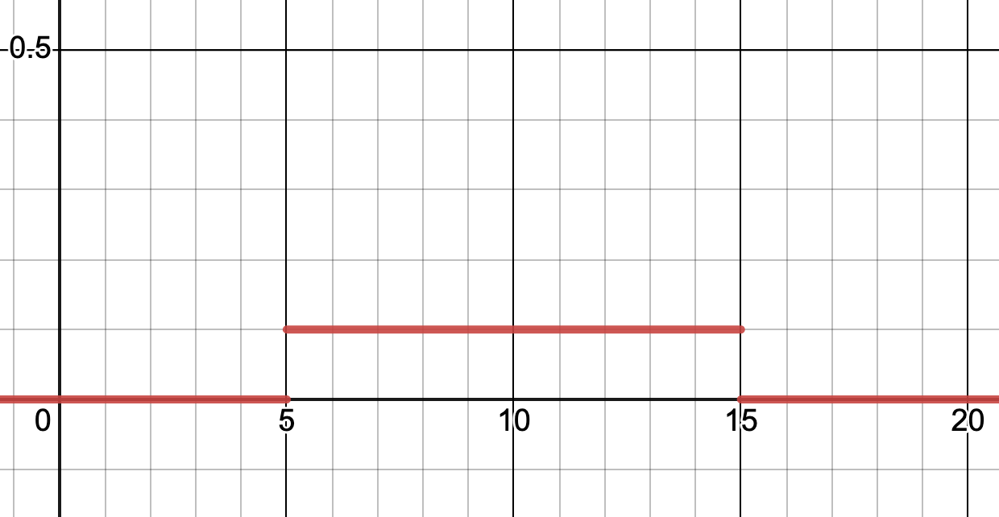
Normal Sampler: 正态分布：
从由指定范围限定的截断正态分布生成随机样本。
|
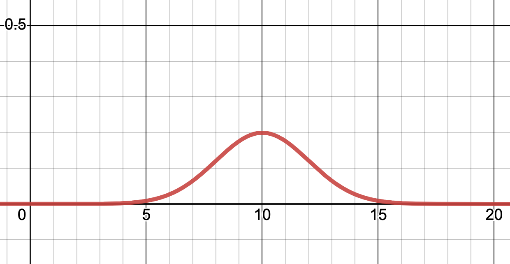
Animation Curve Sampler:
Animation Curve 是 Unity 的内置功能，而不是 Perception 里的内容。
根据用户提供的“Animation Curve”表示的范围和概率分布对值进行采样。动画曲线的 X 轴对应于该采样器将从中拾取的值，而 Y 轴对应于这些值的相对概率。相对概率（Y 轴）不需要在 1 时最大化，因为只有曲线的形状才重要。然而，Y 值不能为负（即可能为负的值）。
|
通过在 Inspector 中公开上面的 Sampler 变量并使用 Unity 的 UI 在曲线上添加和编辑点，可以更容易地创建动画曲线。
|
Sampler 生成由活动场景的当前随机状态设定种子的随机值。更改场景的随机种子将导致 Sampler 生成不同的值。更改 Sampler、Parameters 或Randomizers的顺序也会导致在模拟过程中采样不同的值。建议用户不要在模拟中使用 UnityEngine.Rom 类或 System.random 类生成随机值，因为这两个类都可能生成不确定或种子不正确的随机值。仅使用 Perception 采样器生成随机值将有助于确保 Perception 模拟在本地执行期间和云中的 Unity 模拟上生成一致的结果。
Perception Camera 组件是绑在 Camera 上的：
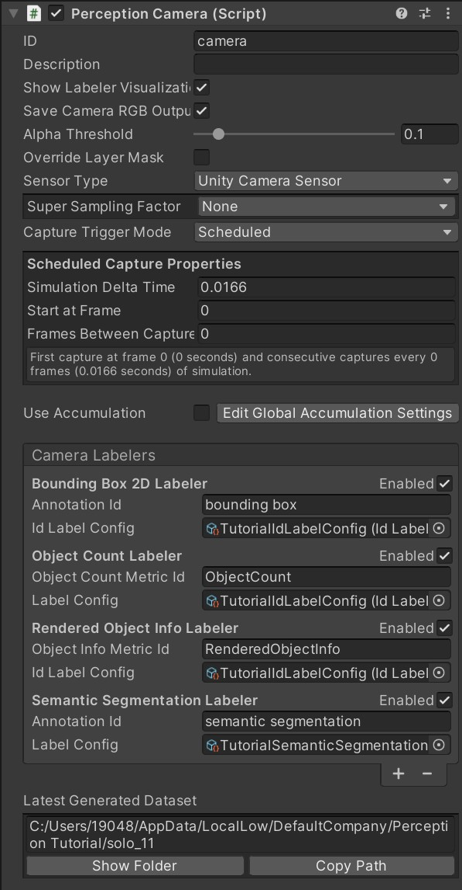
Properties
| Property: | Function: |
|---|---|
| Description | A description of the Camera to be registered in the JSON dataset. 要在 JSON 数据集中注册的 Camera 的描述。 |
| Show Visualizations | Display realtime visualizations for labelers that are currently active on this camera. 显示此 camera 上当前活动的 labelers 的实时可视化。 |
| Capture RGB Images | When you enable this property, Unity captures RGB images as PNG files in the dataset each frame. 启用此属性时，Unity 会在每帧的数据集中捕获 RGB 图像作为 PNG 文件。 |
| Capture Trigger Mode | The method of triggering captures for this camera. In Scheduled mode, captures happen automatically based on a start frame and frame delta time. In Manual mode, captures should be triggered manually through calling the RequestCapture method of PerceptionCamera.触发此 camera 捕获的方法。在 Scheduled（计划）模式下，捕获会根据开始帧和帧增量时间自动进行。在 Manual（手动）模式下，应通过调用 PerceptionCamera 的 RequestCapture 方法手动触发捕获。 |
| Override Layer Mask | When this property is enabled, labelers will utilize the layer mask on the Perception Camera instead of the culling mask on the camera when rendering objects during data capture. This override particularly affects object culling during segmentation image rendering. 启用此属性后，在数据捕获期间渲染对象时，labelers 将使用 Perception Camera 上的 layer mask，而不是相机上的 culling mask。此覆盖特别影响分割图像渲染过程中的对象剔除。 |
| Sensor Type | The Camera Sensor selected for producing pixel based ground truth data. 为生成基于像素的 ground truth 数据而选择的摄像机传感器。 |
| Layer Mask | The layer mask used by labelers when the Override Layer Mask field is enabled. 启用 Override Layer Mask 字段时，labelers 使用的层遮罩。 |
| Alpha Threshold | The minimum level of transparency required for a pixel to be rendered in segmentation images. 在分割图像中渲染像素所需的最低透明度级别。 |
| Camera Labelers | A list of labelers that generate data derived from this Camera. 从该相机生成数据的 labelers 列表。 |
Properties for Scheduled Capture Mode
| Property: | Function: |
|---|---|
| Simulation Delta Time | The simulation frame time (seconds) for this camera. 此相机的模拟帧时间（秒）。 E.g. 0.0166 translates to 60 frames per second. 例如，0.0166转换为每秒60帧。 This will be used as Unity’s Time.captureDeltaTime, causing a fixed number of frames to be generated for each second of elapsed simulation time regardless of the capabilities of the underlying hardware. For more information on sensor scheduling, see DatasetCapture.导致无论底层硬件的功能如何，每秒经过的模拟时间都会生成固定数量的帧。 |
| First Capture Frame | Frame number at which this camera starts capturing. 此相机开始拍摄时的帧序号。 |
| Frames Between Captures | The number of frames to simulate and render between the camera’s scheduled captures. Setting this to 0 makes the camera capture every frame. 在摄影机的计划捕获之间要模拟和渲染的帧数。将此设置为 0 将使相机捕捉每一帧。 |
Properties for Manual Capture Mode
| Property: | Function: |
|---|---|
| Affect Simulation Timing | Have this camera affect simulation timings (similar to a scheduled camera) by requesting a specific frame delta time. Enabling this option will let you set the Simulation Delta Time property described above.通过请求特定的帧增量时间，使此摄影机影响模拟计时（类似于 scheduled camera）。启用此选项可以设置上述 Simulation Delta Time 属性。 |
Output Resolution
使用 Unity Editor 生成数据集时，Perception Camera 生成的图像的分辨率将与编辑器的游戏视图设置的分辨率相匹配。但是，使用 built players 生成的图像（包括 local builds 和 Unity Simulation runs）将使用项目设置中指定的分辨率。（这句话应该是指编译后的程序？）
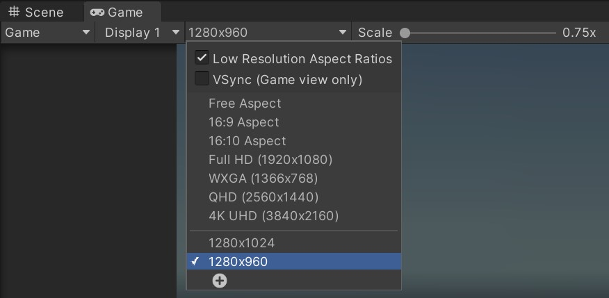
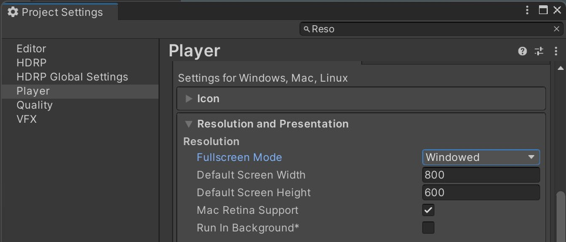
Accumulation
Accumulation 允许您使用需要多个帧才能获得最终结果的渲染技术。例如路径跟踪或累积运动模糊。
Camera Sensors
可以为 Perception Cameras 实现自定义相机传感器，以控制如何为所有支持的通道类型（RGB、实例分割、法线、深度等）执行渲染。可以使用 Perception Camera 组件检查器中的
Sensor Type字段配置为 Perception 相机选择的特定传感器。
Unity Camera Sensor
Unity 摄像头传感器是 Perception Cameras 上选择的默认传感器。这种传感器类型使用户能够捕获 Perception camera 游戏对象上配置的摄像头组件输出的数据。该传感器上的“超级采样因子”字段通知相机以原始宽度和高度的 2 倍、4 倍或 8 倍（分别为分辨率的4 倍、16 倍或 64 倍）捕获图像，以执行高质量的超级采样抗锯齿（SSAA）效果。该效果使用子像素平均来生成更平滑的输出图像，渲染几何体边缘周围的混叠伪影更少，有时纹理中的小细节周围的混迭也会得到改善。请注意，无论该传感器上配置的特定超级采样设置如何，该传感器的输出分辨率都不会改变。
Camera Labelers
Camera labelers 在 JSON 数据集中捕获与相机相关的数据。您可以使用这些数据来训练模型和进行数据集统计。Perception 软件包提供了多个 CameraLabeler，您可以从 CameraLabeler 类派生来定义更多的 labelers。
Semantic Segmentation Labeler

SemanticSegmentationLabeler 使用附加的 Camera 生成 2D RGB 图像。Unity 使用
SemanticSegmentationLabelingConfiguration中与标签关联的颜色绘制对象。如果 Unity 找不到对象的标签，它会将其绘制为黑色。
Instance Segmentation Labeler
Instance Segmentation Labeler（实例分割标注器）使用附加的摄影机生成 2D RGB图像。Unity 使用唯一的颜色绘制标记对象的每个实例。
Bounding Box 2D Labeler

BoundingBox2DLabeler 为每个具有在
IdLabelConfig中定义的标签的可见对象生成二维边界框。Unity 使用渲染图像计算边界框，因此它仅排除对象的遮挡部分或框外部分。
Bounding Box 3D Labeler
Bounding Box 3D Labeler 为场景中每个标记的游戏对象生成 3D 地面实况边界框。与 2D 边界框不同，3D 边界框是根据场景中标记的网格计算的，并且会记录所有对象（与它们的遮挡状态无关）
注意：边界框 3D Labeler 仅支持非嵌套蒙皮网格渲染器对象。
Object Count Labeler
|
ObjectCountLabeler 记录您在
IdLabelConfig中定义的每个标签的对象计数。Unity 仅记录Camera帧中至少有一个可见像素的对象。
Rendered Object Info Labeler
|
RenderedObjectInfoLabeler 记录相机图像中可见的所有对象的列表，包括它们的实例 ID、解析的标签 ID 和可见像素计数。如果Unity无法将对象解析为
IdLabelConfig中的标签，则不会记录这些对象。
Keypoint Labeler
Keypoint labeler（关键点标注器）捕捉已标记游戏对象上特定点的屏幕位置。此 Labeler 的典型用途是捕捉人体姿态估计数据，但它可以用于捕捉任何类型对象上的点。Labeler 使用关键点模板，该模板定义要为模型捕获的关键点以及这些关键点之间的骨架连接。关键点的位置记录在像素坐标中。
Occlusion Labeler
|
Occlusion Labeler（遮挡标注器）为帧内可见的每个对象报告一组可见性度量。每组包含3个指标：
- 可见百分比 Percent Visible：对象的可见部分。
- 帧内百分比 Percent In Frame：对象未被摄影机帧遮挡的部分。
- 帧内可见性 Visibility In Frame：帧内对象部分的未遮挡部分。
- $percentVisible = percentInFrame\times visibilityInFrame$
Depth Labeler
|
Depth Labeler（深度标注器）以 EXR 格式输出 32 位深度图像。每个像素包含从摄影机到场景中对象的实际距离，单位为 Unity units（通常为米）。深度值直接写入 R 通道。
深度图可以用 RenderDoc 软件来打开。
Normal Labeler
|
Normal Labeler（法线标注器）捕捉3通道图像中对象的顶点法线。此法线图像使用 EXR 格式进行编码。图像的 RGB 通道分别存储每个顶点法线像素的 XYZ 分量。
Environment Labeler
Environment Labeler（环境标签器）生成有关场景环境的信息，例如其标记对象的层次。
Available Information
标签层次结构（Label Hierarchy）–标签层次结构（JSON 中的
hierarchy字段）提供了由实例 ID 唯一标识的标记对象之间的父子关系。用户可以决定是只为可见对象生成标签层次，还是为场景中的所有对象生成标签层级。禁用的对象始终被忽略。
Annotation Example
|
Pixel Position Labeler
Pixel Position Labeler 以像素输出从摄影机到对象的摄影机空间距离。输出是 EXR 格式的图像文件，对每个像素进行以下编码。想象一个向量 $v_{AB}=(x，y，z)$，从相机到像素 $(A，B)$ 的
红色通道–向量 $v_{AB}$ 的 $x$ 分量
绿色通道–向量 $v_{AB}$ 的 $y$ 分量
蓝色通道-向量 $v_{AB}$ 的 $z$ 分量
Alpha通道–始终设置为 1
Metadata Labeler
在帧的末尾，这个 labeler 从场景中的所有 MetadataTags 中获取数据，并将其记录到结果 JSON 中的 _metadata_ 部分。
- LabelingNameMetadataTag
- 添加有关 GameObject 名称的信息
- 如何添加数据的简单示例 Frame JSON 数据
- LabelingTagMetadataTag
- 添加有关 GameObject 标签的信息
- 添加数据的一个简单示例 Frame JSON 数据
- LightMetadataTag
- 添加有关灯光强度和颜色的信息
- 这是如何注入场景相关的示例帧 JSON 数据中的信息
- LabelingChildNameMetadataTag
- 将子对象的名称报告给父数据
- 如何将不同对象的数据分组到同一报告的示例
- LabelingDistanceToMainCameraMetadataTag
- 报告从游戏对象到主相机的距离
- 如何对报告进行任何 Unity Engine 计算的简单示例
- LabelingKeyValuesMetadataTag
- 增加了通过 Unity 编辑器添加自定义字符串的可能性
- 这是如何通过 Unity Editor 添加自定义信息的示例
- LabelingTransformDataMetadataTag
- -添加了关于 GameObject 转换的信息
- 这是一个如何添加选择信息的可能性的示例，以包括在 Unity Editor 中的 Frame JSON 数据中
继承 LabelMetadataTag
实现所需的抽象方法
2.1 键-序列化 JSON 文件中对象的名称
2.2 GetReportedValues（IMessageBuilder-builder）-通过 _builder 将此处所需的任何信息添加到 builder 中。add(“object_name”，data_to_be_addd>_)。将组件添加到带有标签的 GameObject 组件
将组件添加到带有标签的 GameObject 组件
Limitations
ground truth 并不与所有渲染功能兼容，尤其是那些修改帧中对象的可见性或形状的渲染功能。
生成 ground truth 时：
- Unity 不运行顶点和几何体着色器
- Unity 不会运行后处理效果，HDRP 中的内置镜头失真除外
DatasetCapture 跟踪 sensors，annotations，metrics，并将数据传递到激活的 endpoint。它还控制每帧经过的模拟时间，以适应激活的 sensors。
这段代码是一个自定义的相机标记器 CameraLabeler，用于在场景中添加标记 labels 和测量 metrics ，以用于训练和评估模型。
在 Perception Camera 中，Label 通常用于标记场景中的物体，如人、车、建筑等，以及它们的属性，如类别、大小、颜色等等。这些信息可以通过标记器（labeler）进行添加或修改，并且可以用于训练和评估机器学习模型。
而 Metric 则是用于测量场景中某些物理量或者训练和评估过程中的指标，如灯光的位置、物体的速度、模型的精度等等。这些信息可以被记录下来，以便后续对场景展开更深入的数据分析和挖掘。相比于 Label，Metric 更关注于数值上的精确度和可重复性，可以帮助开发者更好地分析和改进算法表现。
总之，Label 是场景中物体的标记，而 Metric 是场景中物理量或者模型性能的测量。两者各有不同的应用场景和意义，但都可以作为机器学习和计算机视觉任务的关键信息来源。
|
Example metric that is added each frame in the dataset:
|
Example annotation that is added to each capture in the dataset:
|
Dataset Capture 跟踪 sensors（传感器），annotations（注释） 和 metrics（度量），将数据传递到 Endpoint，Endpoint 负责将数据打包为用户可用的格式。
Supported Endpoints
Perception 软件包包含三个内置端点选项：
1. （推荐）SOLO Endpoint
随着模拟的进行，我们最新的输出格式将捕获信息写入相关目录。这与我们以前在模拟结束时写入数据的方法不同，使您能够在长时间模拟运行时查看数据。查看 SOLO endpoint 相对于我们以前的 Perception endpoint 所具有的优势的完整列表。
SOLO 数据集是 JSON 和图像文件的组合。本文档描述了用于存储数据的架构。
SOLO schema（模式）为模拟输出提供了一种通用结构，可以很容易地使用它来显示统计数据或训练机器学习模型。
SOLO 数据集由 sensor captures（传感器捕获）、annotations（注释）和 metrics（度量组成），例如 images（图像）和 2d bounding box labels（二维边界框标签）。
这些数据有各种形式，可能会被不同的 sensors（传感器）和 annotation（注释机制）捕获。
多个 sensors（传感器）可以产生不同频率的捕获。
目标
schema（模式）应该：
以一种定义良好的格式包括捕获的传感器数据和注释。这使我们能够维护Perception包和数据集消费者之间的合同（例如，统计和ML建模…）
维护捕获的数据和同一传感器同时获取的注释之间的关系。
它还应保持与时间相关的感知任务（如物体跟踪）的连续捕获之间的关系。
支持流式数据，因为数据将在模拟过程中从多个进程或云实例动态创建。
能够轻松支持新型传感器和注释。
术语
- simulation：一个 Unity player 构建的一个或多个 build，可能具有不同的参数。
- capture：Unity 传感器的完整渲染过程，将渲染结果保存到数据文件中，如（png、pcd 等）
- frame：Unity 模拟中的实际帧
- sequence：simulation 生成的按时间顺序的一系列 captures。（Perception Scenario 中每一个 Iteration 对应一个 SOLO 数据 sequence）
- step：每个 sequence 产生 frames 的数据索引。
- annotation：记录的数据（如边界框或语义分割），用于描述同一时间戳的特定 capture。capture 可能包括多种类型的 annotations。
- label：表示语义类型或类的字符串标记（如 car、human.adult 等）。一个 GameObject 可能有多个 labels 用于不同的 annotation 目的。
- coordinate systems：schema 中使用了 3 个坐标系：
- global coordinate system：相对于 Unity 中 global origin 的坐标。
- sensor coordinate system：相对于 sensor（传感器）的坐标。这对于单个传感器的 ML 模型训练很有用，该传感器可以从全局坐标系和自我坐标系转换。在仿真中很少记录使用传感器坐标系的物体姿态的原始值。
结构

SOLO 数据存储在 sequence/step 层次结构中。生成的数据的顶层将包括元数据和定义文件，以及每个 captured sequence 的目录。
在 sequence 目录中，将有一个 JSON 文件，其中包含 frame 中的所有 annotations 和 metrics。
sensors 和 annotators（如 RGB 捕获或分段掩码）也将驻留在该目录中。出于组织目的，所有文件都将遵循严格的命名模式，frame 文件如下：
- step.NNNN.frame.json
- NNNN 是 step 的序号
- step.NNNN.ID.EXT
- NNNN 是 step 的序号
- ID 是创建文件的 sensor 或 labeler 的注册 ID
- EXT 是文件扩展名
顶级目录包含：
- metadata.json：元数据文件包含模拟范围的数据。这些值要么由 Perception 软件包自动生成一次，要么是系统范围的元数据。
|
- sensor_definitions.json：包含数据集中所有 sensors 的定义。
|
- annotation_definitions.json：包含数据集中所有注释的定义。
|
- metric_definitions.json：包含数据集中所有 metrics 的定义。
|
每个 sequence 都将获得自己的目录，该目录将包含所有 capture。序列目录的命名约定如下：sequence.X，其中X是从值0开始的数值。例如，模拟的前三个 sequence 目录名称为：
- sequence.0
- sequency.1
- sequence.2
sequence 目录包含序列的所有 captures、annotations 和 metrics。
所有数据文件名都以捕获它们的步骤开始。根据文件类型的不同，文件名规则不同：
File Structure
|
Example Dataset Layout
|
Frame
对于 step.1.frame.json，文件结构及解释：
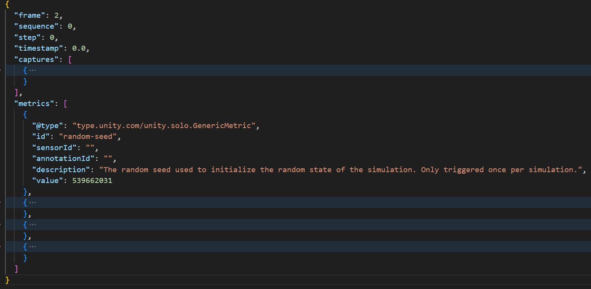
|
Capture
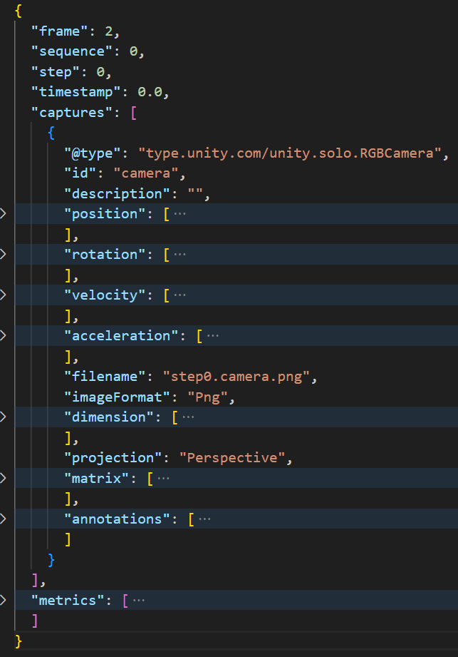
Capture 记录包含 captured（捕获）的文件、annotations （注释）集合和描述 sensor 状态的额外 metadata（元数据）之间的关系。
|
RGB Capture
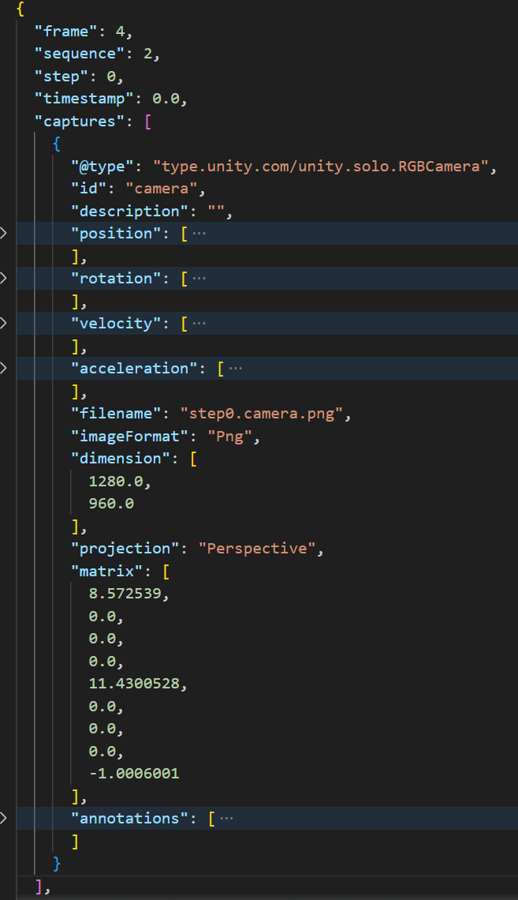
|
Sequence, Step, and Timestamp
在某些用例中，在模拟过程中，两个连续的捕获可能在时间上不相关。例如，如果我们在场景中为X步模拟生成随机放置的对象。在这种情况下，序列、步骤和时间戳与捕获的数据无关。我们可以为这些类型的捕获的序列、步骤和时间戳添加一个默认值。在我们需要保持捕获（例如，10秒视频中的相机捕获序列）和[度量]（#metrics）之间的时间顺序关系的情况下，我们需要添加序列、步骤和时间戳来保持捕获的时间顺序的关系。
在SOLO中，序列表示任何时间顺序捕获和注释的集合，并对应于感知场景的一次迭代。时间戳是指自序列开始以来以毫秒为单位的模拟挂钟。步长是指在触发捕获或度量事件时增加的整数值。我们不能使用时间戳在两个不同的事件之间进行同步，因为时间戳是浮动的，因此会产生较差的索引。相反，我们使用了一个“步长”计数器，可以很容易地将同时发生的度量和捕获关联起来。
以下是如何同步捕获、度量、时间戳和步骤的说明。
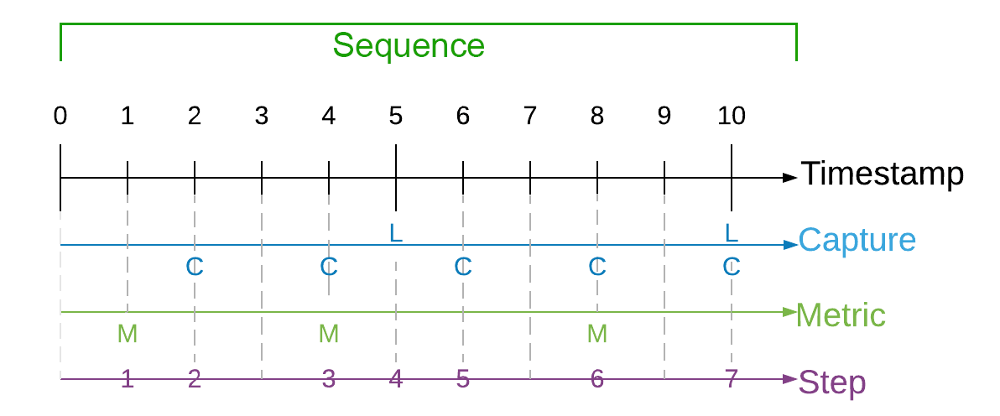
由于每个传感器可能会触发不同频率的捕获，因此在同一时间戳，我们可能包含0到N个捕获，其中N是该场景中包括的传感器的总数。如果在同一时间戳捕获两个传感器，则它们应该共享相同的序列、步骤和时间戳值。
Annotation

Annotation 注释记录包含 sensor 的 ground truth，可以是内联的，也可以是单独的文件。单个 capture 可以包含许多 annotations，每个 annotation 对应于模拟中的一个活动 Labeler。
|
除上述内容外，注释还可以包括为该注释记录的单个对象的阵列，例如边界框的列表。我们看下面的几个例子。此数组通常命名为 values 或 instances。
Example Annotations
Semantic Segmentation
语义分割注释扩展了基本注释类，以包括 PNG 格式的颜色掩码的文件名，其中每个颜色映射到唯一的对象类。
|
语义分段注释示例：
|
下面显示了一个示例语义分割掩码。请注意同一类物品（例如餐椅）的颜色是如何相同的：

_注意：未标记的对象在分割遮罩中渲染为黑色_
Instance Segmentation
与语义分割类似，实例分割注释包括 PNG 格式的颜色掩码的文件名。这一次，每个独特的物体都有一种独特的颜色。该模式与语义分割略有不同，包括instanceId（整个模拟中唯一的对象id）和 labelId（对象类的数字标识符）。例如：
|
示例实例分段掩码如下所示。请注意每个对象如何具有唯一的颜色：
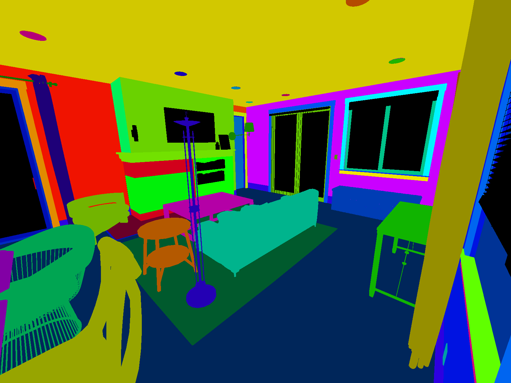
2D Bounding Box
每个边界框记录将一个元组（实例、标签）映射到一组4个变量（x、y、宽度、高度），用于绘制边界框。
3D Bounding Box
三维边界框信息。与2D边界框不同，3D边界框坐标是在传感器坐标系中捕获的。每个边界框记录将一个元组（实例、标签）映射到绘制三维边界框的平移、大小和旋转，以及三维边界盒的速度和加速度（可选）。
Keypoints
关键点数据，通常用于人体姿态估计。
Metrics
度量存储可用于描述特定序列、捕获或注释的额外元数据。度量记录存储为任意数量（M）的键值对。对于序列度量，capture_id、annotation_id 和 step 应为 null。对于捕获度量，annotation_id 可以为 null。对于注释度量，sequence_id、capture_id、annotation_id 和 step 这四列都不为空。度量文件可以从不同的模拟实例并行生成。
Definitions
传感器、注释和度量定义表在模拟过程中是静态的。这通常来自模拟的定义，并在模拟过程中生成。
sensor_definitions.json
JSON 文件，包含模拟中存在的所有传感器的集合。每个传感器都被分配了一个唯一的 UUID。每个都与一个自我相关联，并将自我的UUID 存储为外键。
传感器扩展了这个基本传感器类，并且可以在其定义中包含其他字段。
annotation_definitions.json
一个 JSON 文件，包含一组注释规范（annotation_definition）。每个记录描述一种特定类型的注释。
metric_definitions.json
存储度量规范记录集合（metric_definition）的 JSON 文件。每个规范记录描述存储在 metric 值中的特定度量。
Schema Versioning
架构版本控制。
2. Perception Endpoint
我们的传统Perception输出格式，其中信息存储在捕获中，并在模拟结束时写入（或150帧块）。尽管该端点仍然支持所有新的Labeler，如深度和遮挡，但我们强烈建议尝试上面的SOLO端点，以获得更轻松的后处理和调试体验。
3. No Output Endpoint
选中时，此端点不会将任何信息写入磁盘！这对于防止在编辑器中调试模拟逻辑或使用Perception Camera的实时可视化工具进行测试时生成无关数据集非常有用。
How to Change the Active Endpoint
Project Settings→Perception- 点击
Change Endpoint Type - 从下拉列表中选择您的首选端点。
Creating your Own Endpoint
使用 Endpoint 系统，为您喜欢的输出格式创建自己的 Endpoint 不仅是可能的，而且很容易访问。我们整理了一个假设自定义 Endpoint 的小示例，向您介绍创建、迭代和使用自己的自定义端点的基本知识。
0.11.0-preview.1 版本以后的 Perception 软件包支持自定义端点的概念。以前，Perception 生成的所有数据都是使用我们专有的输出格式自动写入磁盘的。但是，使用自定义 Endpoint，您可以使用我们的中间表示以您选择的输出格式编写所有数据！
我们用一个我们称之为“FlatEndpoint”的假设端点来证明这一点，该端点将在每次模拟运行中将所有数据写入一个唯一的文件夹中。为此，我们创建了一个新类并实现了“IConsumerEndpoint”。这允许在Perception Settings UI中选择我们的自定义端点，并将其用作模拟的端点。我们进一步实现了“IFileSystemEndpoint”界面，以连接Perception如何保存上次创建的数据集所在的位置，并使“显示最新数据集”按钮等功能正常工作。
|